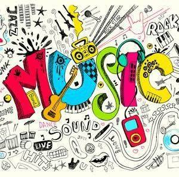

I hink music in itself is healing,americian Billy Joel once said.It's anxpression of humanity.it something we are all touched by. No matter what culture we're from, everyone loves music." Most of us would wholeheartedly agree with this statement, and it is this universal bond with music that has led researchers across the globe to investigate its therapeutic potential."We have a such a deep connection to music because it is 'hardwired' in our brains and bodies," said Barbara Else.We can all think of at least one song that, when we hear it, triggers an emotional response. It might be a song that accompanied the first dance at your wedding, for example, or a song that reminds you of a difficult break-up or the loss of a loved one."We have a such a deep connection to music because it is 'hardwired' in our brains and bodies," Barbara Else, senior advisor of policy and research at the American Music Therapy Association told Medical News Today. "The elements of music - rhythm, melody, etc. - are echoed in our physiology, functioning and being."Given the deep connection we have with music, it is perhaps unsurprising that numerous studies have shown it can benefit our mental health. A 2011 study by researchers from McGill University in Canada found that listening to music increases the amount of dopamine produced in the brain - a mood-enhancing chemical, making it a feasible treatment for depression.And earlier this year, MNT reported on a study published in The Lancet Psychiatry that suggested listening to hip-hop music - particularly that from Kendrick Lamar - may help individuals to understand mental health disorders.But increasingly, researchers are finding that the health benefits of music may go beyond mental health, and as a result,
Given the deep connection we have with music, it is perhaps unsurprising that numerous studies have shown it can benefit our mental health. A 2011 study by researchers from McGill University in Canada found that listening to music increases the amount of dopamine produced in the brain - a mood-enhancing chemical, making it a feasible treatment for depression. 
some health experts are calling for music therapy to be more widely incorporated into health care settings."We have a such a deep connection to music because it is 'hardwired' in our brains and bodies," Barbara Else, senior advisor of policy and research at the American Music Therapy Association told Medical News Today. "The elements of music - rhythm, melody, etc. - are echoed in our physiology, functioning and being."

But increasingly, researchers are finding that the health benefits of music may go beyond mental health, and as a result, some health experts are calling for music therapy to be more widely incorporated into health care settings.
Contact me
Facebook Profile , | Page